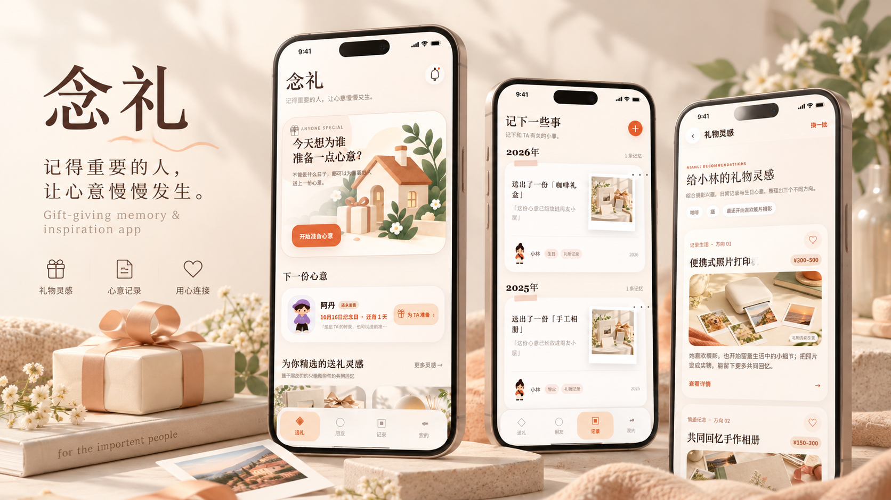

从问题洞察到
产品实现。


从设计出发，
建立产品判断。
用户洞察与需求分析
从调研、访谈与行为线索中识别真实问题，梳理用户需求与使用场景。
产品规划与体验设计
将需求转化为产品机制、信息架构与关键流程，完成从问题定义到方案表达。
AI 应用与原型探索
围绕 AI 能力设计产品逻辑与交互方案，通过原型实践持续优化体验。
Let's Connect.
© 2026 LIU YING返回顶部 ↑

从调研、访谈与行为线索中识别真实问题，梳理用户需求与使用场景。
将需求转化为产品机制、信息架构与关键流程，完成从问题定义到方案表达。
围绕 AI 能力设计产品逻辑与交互方案，通过原型实践持续优化体验。